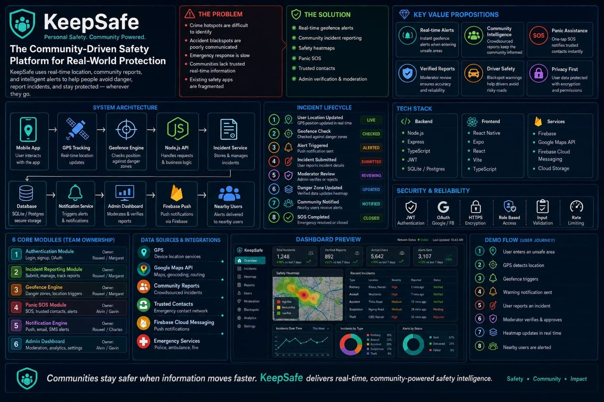

Social network
A Facebook-style app with followers, profiles, posts, groups, notifications and live chat. The Go backend uses sessions and cookies for auth and Gorilla WebSocket for real-time features.
Code on GitHubGo developer building backend systems, APIs and real-time apps. Apprentice at Zone01 Kisumu, based in Kisumu, Kenya.
A Facebook-style app with followers, profiles, posts, groups, notifications and live chat. The Go backend uses sessions and cookies for auth and Gorilla WebSocket for real-time features.
Code on GitHubAnswers questions about company documents and cites its sources. Documents are parsed, chunked, embedded with caching, stored in FAISS, then passed to an LLM. Built on free-tier Gemini and Groq APIs, with a FastAPI backend and React frontend.
Code on GitHubA community-driven safety platform for Kenyan commuters. Users get real-time geofence alerts near danger zones, report incidents that moderators verify, and send a one-tap SOS to trusted contacts. I co-own the Panic SOS module and the admin dashboard.

Ordering platform for a cake business. A JSON API in Go handles orders, payments, admin login, image uploads and WhatsApp notifications. The frontend is a separate Next.js app.
Code on GitHubA web forum written in Go by a team of peers. I built the posts and comments feature: handlers, database queries and tests. Teammates covered auth and sessions, likes and filters, frontend templates, and the Docker setup.
Code on GitHubI write about what I build and learn as a Go developer. Articles are on dev.to.
Go, REST APIs, SQLite, sessions and auth, WebSockets
JavaScript, React, Next.js
Docker, Git, FastAPI
Project-based, peer-learning software training in Kisumu, Kenya. No lectures: I learn by building, reading other people's code and shipping with a team.
Attended the Zone01 Kisumu Backend Frameworks Mini-Conference at Lakehub and wrote up a recap from a Go developer's point of view.
I'm a software developer training at Zone01 Kisumu, a peer-learning coding school. Go is my main language. I like backend work, APIs and real-time systems.
My style is small, modular code with as few dependencies as I can get away with. I'd rather understand the standard library than reach for a framework first.
I like knowing what happens underneath the code: DNS, NAT, TCP and UDP, packet routing and the OSI model are all topics I've studied in depth. I'm also exploring cloud and DevOps, starting with Linux, Git, Docker and CI/CD.
Outside code, I love travelling and exploring new places.
I'm based in Kisumu and follow the Kenyan tech and startup scene closely. I'm looking for a junior backend role where I can keep building with Go and learn from a team.